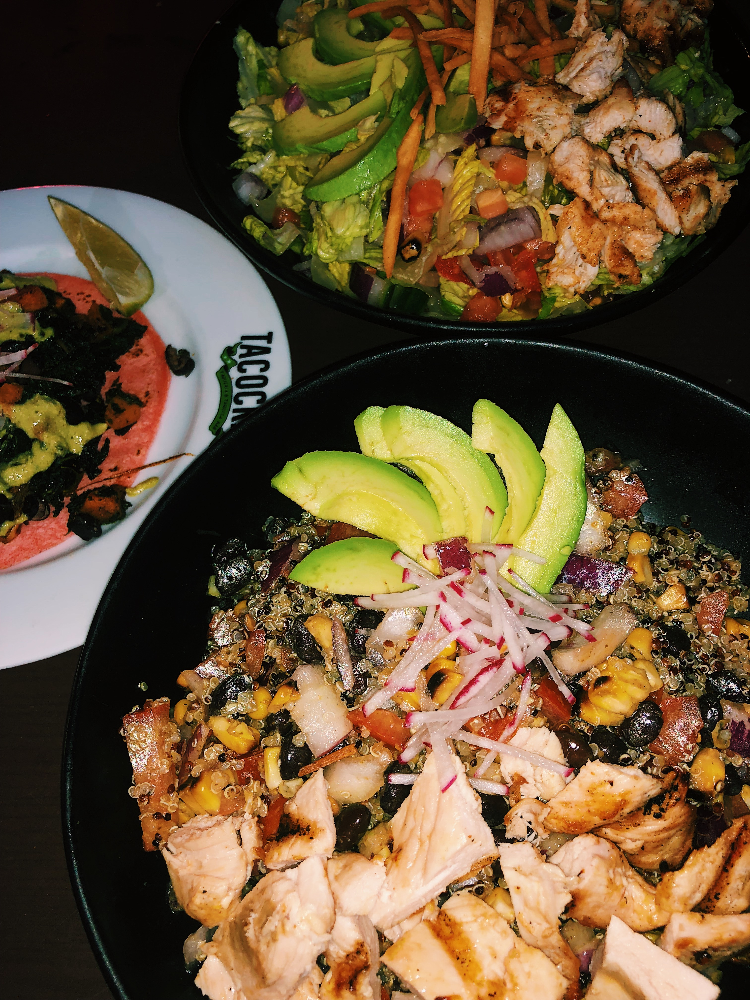
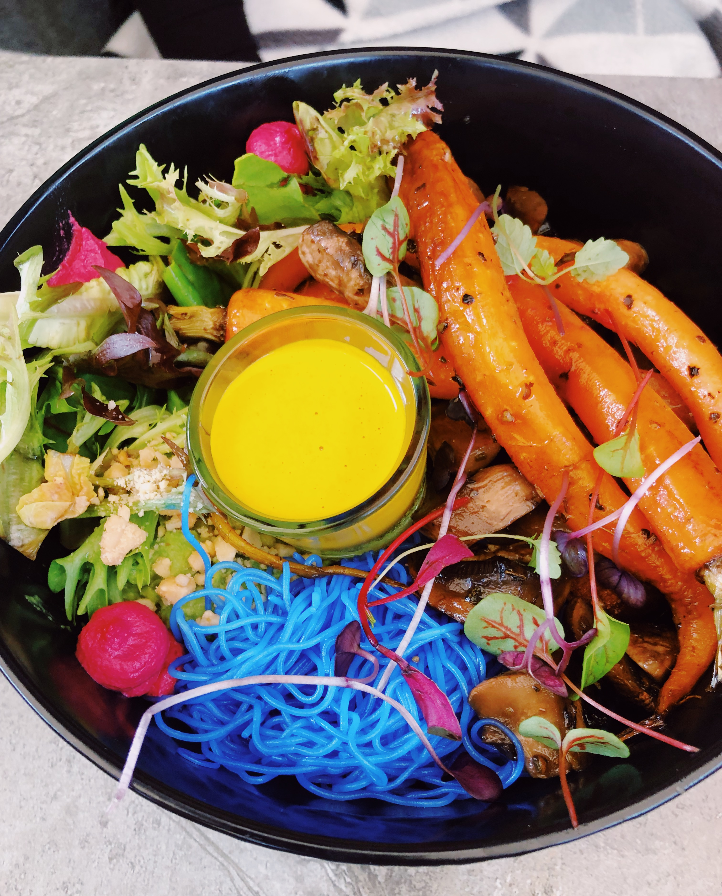

NJ

Birravino. (Italian Restaurant) - The perfect spot for pizza after a day at the beach in the summer. Sit outside in the "Beer Garden" and order these 2 pies. In the back, "Melanzane": crispy eggplant, bufala mozzarella, scallion & ricotta salata. Front, "Prosciutto": prosciutto, arugula, mozaarella & balsamic glaze.
Bagel Station. (Bagels, Bagels, Bagels) - New Jersey is known for its bagels. Want one of the best there is? Visit bagel station to get a classic. This beauty is a blueberry bagel with strawberry cream cheese!
Albarino. (Galician Tapas & Wine Bar) - Great place for sharing dishes (or not!). Best known for their paella! This one is the "Valenciana" which is made with organic chicken, chorizo, mussels, clams, gulf shrimp, saffron, carrots & piquillo peppers!
NY
Home Frite. (French Fries) - Time to get creative with your fries. Top them with just about anything at this establishment; nothing is off limits. In the back, "Truffle Fries": shredded parmesan cheese, chopped parsley, black truffle oil & lemon garlic ailoli on the side. In front, "Dutch Fries": loaded with curry ketchup, diced white onion & lemon garlic aioli.
MIAMI
Pubbelly Sushi. (Japanese Cuisine) - Amazing sushi, amazing cocktails. With that said, make sure to stop in during their happy hour for one of the best in Miami. One of their top rolls, "Bigeye Tuna" (left): spicy tuna, arroz pegao, truffle oil & sea salt. Typically, $17 but go during happy hour for just $10. Other items on the happy hour menu include the "Truffle Corn" (center): cotija, truffle crema & yuzu. Also, the "Crispy Salmon Roll" (right): cream cheese, avocado, eel sauce, spicy mayo & crispy panko.
Pura Vida. (Health Food Restaurant) - An on-campus favorite. Well-known for the organic, vegan and delicious options they provide. The perfect place to grab a bite while working on an assignment in between classes. Seen above, "Vegan Lentil Bowl": vegan Adashah (Lentil-based protein), quinoa, arugula, avocado, sprouts, sunflower seeds, carrots, radish, picled cabbage & green tahini dressing.
Tacocraft. (Tacqueria & Tequila Bar) - Taco Tuesday anyone? Okay, well maybe no tacos in this picture but Tacocraft is well-known for their tasty tacos and delicious margaritas. In this photo, "Quinoa Power Bowl": quinoa, roasted corn, red onion, tomato, black bleans, radish, avocado & grilled chicken.
Threefold Cafe. (Melbourne Cafe Scene) - On Sunday... we brunch. Where? Right here. Using locally sourced ingredients, Threefold makes quality coffee that pairs well with their unique twist on simple brunch classics. A best-seller, "Smashed Avocado": feta, lime, basil, served with roasted mushroom on ZTB (Zak the Baker) toast & topped with a poached egg.
Ichimi Ramen. (Japanese Restaurant) - Authentic Japanese food. My personal favorite is shown above, "Curry Ramen": curry with ton katsu soup base, topped with scallions, mushrooms, egg, bean sprout, bamboo shoots & choice of pork belly or wonton / beef or rib.
No Name Chinese. (Chinese Cuisine, Asian Flavors) - The perfect pairing to create unique and flavorful dishes like this one. "Beef Noodles": lo mein noodles, grass fed tenderloin, thai basil, gai lain, oyster sauce, sesame sauce and greens.
Madruga Bakery. (Rustic Breadshop and Cafe) - What doesn't this bakery have? Bread, Pastries, Breakfast, Lunch... with everything freshly made, you truly cannot go wrong at Madruga. Stop in for breakfast and coffee, but make sure to grab a pastry and loaf for later. One of their best-sellers as shown above, "Madruga Egg Sandwich": niman ranch bacon, sauteed greens, coastal cheddar, organic egg, and fresh herb aioli on a poppy onion roll. Don't forget to pair it with a latte!
Don Pan International Bakery. (Bakery, Deli, Cafe) - A small chain in Miami with delicious cuban treats. Go in for breakfast and leave fully satisfied. What to order? I prefer the "Latin Breakfast": 2 eggs (your way), shredded meat (beef or chicken), white cheese, an arepa & a cafe con leche. You think you need anything else? Nope, but take a look at the pastries and you won't be leaving empty-handed.
Kyu. (Asian-inspired Restaurant) - In the heart of Wynwood is this modern Asian-inspired eatery. After asking for the chefs recommendation, we were brought this. "Coliflor Rostizada, Queso de Cabra, Vinagreta de Hiervas y Shishito" (left)... or, roasted cauliflower, goats cheese & shishito-herb vinaigrette. This dish, literally "pays the rent;" that's how popular it is. Other dishes include the "Pan Bao Jaiba Suave" (center): soft shell crab steamed buns and "Gyoza de Puerco y Shitake, Ponzu de Trufa" (right): pork and shitake gyoza, smoked truffle ponzu.
Ghee Indian Kitchen. (Indian Restaurant) - Grab a bunch of friends and bring them in to try this authentic Indian restaurant, with a modern twist. Using high-quality ingredients, Ghee finds it important to pack a lot of flavor into each dish. So, order a bunch and fill your plate with a little bit of everything to try a bunch of differnet powerful flavors. Two of my favorites, "Chicken Tikka Masala": tomato & fenugreek with a bed of rice. On the side, "Ghost Pepper Cheddar Naan".
MELBOURNE
Brighton Soul. (Australian Cafe) - From the down under. This vegetarian-friendly cafe presented a beautiful and tasty dish. The "Buddha Bowl": tofu, blue vermicilli, roasted mushrooms & heirloom carrots, chickpeas, avocado, greens, peanuts & tahini.